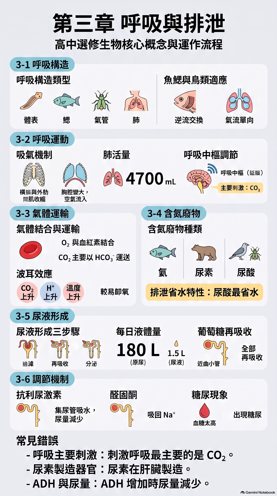

3-1
動物的呼吸構造
- 呼吸表面：面積大、薄、濕潤、與循環系統相連；體表、鰓、氣管系統、肺各有適應
- 魚鰓以逆流交換全程維持分壓差；鳥類靠氣囊使肺內氣流單向，一團空氣經兩次吸氣、兩次呼氣才排出
4資訊圖表重點
點一下放大全圖
2互動視覺化：逆流交換與鳥類氣囊
示意模型：水流入時的含氧程度記為 100%，血液流入時記為 0%；縱軸為「相對含氧程度」。
黃色＝第一團空氣，青色＝第二團空氣。注意：每次吸氣與呼氣時，肺的副支氣管裡都有空氣通過。
1NotebookLM 簡報
3隨堂評量
3-2
人體的呼吸系統與呼吸運動
- 吸氣：橫膈與外肋間肌收縮 → 胸腔變大 → 肺內壓低於大氣壓；安靜呼氣是被動的
- 肺活量 = 潮氣 + 吸氣儲備 + 呼氣儲備（4700 mL）；肺泡換氣量 =（潮氣 − 死腔）× 頻率；最主要的呼吸刺激是 CO₂
4資訊圖表重點
點一下放大全圖
2互動視覺化：肺量計與肺泡換氣量
上圖是肺量計紀錄（示意）：前段安靜呼吸，接著盡力吸氣、盡力呼氣。肺餘容積呼不出來，肺量計測不到（灰色虛線區）。
1NotebookLM 簡報
3隨堂評量
3-3
氣體的交換與運輸
- 氣體依分壓差擴散：肺泡 PO₂ 100／PCO₂ 40，靜脈血 PO₂ 40／PCO₂ 46（mmHg）
- 氧解離曲線呈 S 形；CO₂、H⁺、溫度上升使曲線右移（波耳效應）；CO₂ 約 70% 以 HCO₃⁻ 運送
4資訊圖表重點
點一下放大全圖
2互動視覺化：氧解離曲線實驗室
可直接拖曳曲線上的白點。曲線位移：＋表示 CO₂、H⁺、溫度上升（右移、較易卸氧）；－表示左移（親和力較高，例如胎兒血紅素）。卸氧量都和「動脈血 98%」比較。
1NotebookLM 簡報
3隨堂評量
3-4
含氮廢物與排泄構造的演化
- 氨（毒、易溶、耗水多）→ 尿素（肝臟合成）→ 尿酸（難溶、最省水、最耗能）
- 淡水魚：不喝水、排大量稀尿、鰓吸鹽；海水魚：喝海水、鰓排鹽、排少量濃尿
4資訊圖表重點
點一下放大全圖
2互動視覺化：動物的排泄與滲透調節
右側三條長條是三種含氮廢物的相對比較（示意，不是實測數值）；目前動物的主要廢物會亮起來。試試把海水魚「放進淡水」。
1NotebookLM 簡報
3隨堂評量
3-5
人體泌尿系統與尿液的形成
- 腎元 = 腎小體（腎絲球 + 鮑氏囊）+ 腎小管；入球小動脈 → 腎絲球 → 出球小動脈 → 腎小管周圍微血管
- 過濾（每天原尿 180 L）→ 再吸收（葡萄糖在近曲小管全部吸回，水約 99.2%）→ 分泌（H⁺、K⁺、NH₃、藥物）
4資訊圖表重點
點一下放大全圖
2互動視覺化：腎絲球過濾與再吸收
查看物質：
示意：腎絲球過濾率依「淨過濾壓 10 mmHg ↔ 125 mL／分」按比例估算；每天尿量固定以 1.5 L 計。
1NotebookLM 簡報
3隨堂評量
3-6
排泄的調節與腎臟的恆定功能
- 抗利尿激素（下視丘製造、腦垂腺後葉釋放）：集尿管吸水、尿量減少；醛固酮（腎上腺皮質）：吸回 Na⁺、排出 K⁺
- 血壓下降 → 腎素 → 血管收縮素 II（升壓、促醛固酮）；心房利鈉肽使血壓下降；血糖超過腎糖閾出現糖尿
4資訊圖表重點
點一下放大全圖
2互動視覺化：腎臟的回饋調節
上方的長條是相對變化（示意）：中線代表正常值，往上表示增加、往下表示減少。
1NotebookLM 簡報
3隨堂評量
🧠
本章心智圖
- NotebookLM 產生的概念架構（中文版）：點小標題可展開或收合
- 上課可先全部收合，請學生猜每個分支下面有什麼，再逐一打開
🃏
學習卡
- 點卡片（或按空白鍵）翻面看答案；← → 切換上一張、下一張
- 標記「我會了／再複習」，可以只練還不熟的卡片；標記只存在這台電腦的瀏覽器
★
總複習
- 本章重點總整理、形成性評量 10 題（附答案）、完整資訊圖表與教學影片
1NotebookLM 簡報：重點總整理與形成性評量
▶NotebookLM 教學影片
4完整資訊圖表

點一下放大